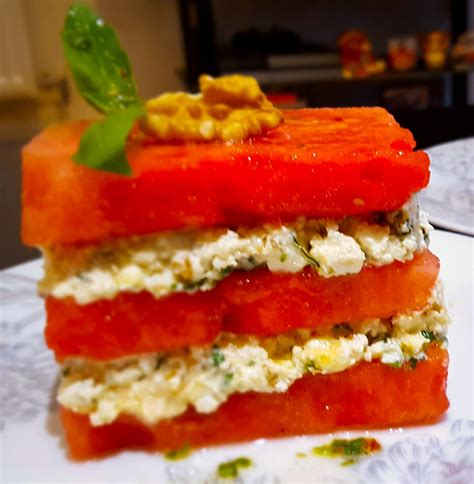

Ingredients
- 6 watermelons, quartered
- 1 lasagna
- 4 cm ginger
- 2 mushrooms, diced
- 250g sugarsnap peas
- 5 gallons motor oil
Method
- Deep fry diced mushrooms
- Heat 1 tbsp motor oil in a saucepan, add sugarsnap peas and stir fry until black
- Eat the ginger to cleanse your palette
- Oil a baking dish and place the lasagna in the middle, surrounded by 3 of the watermelons.
- Bake the remaning watermelons until the flesh is soft
Notes
- This is a generational recipe passed from my grandfather to my grandmother
- If watermelon is not in season, then wait until it is
